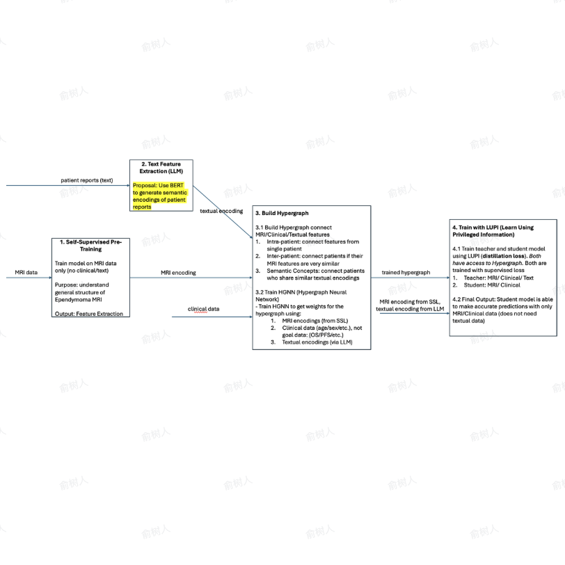
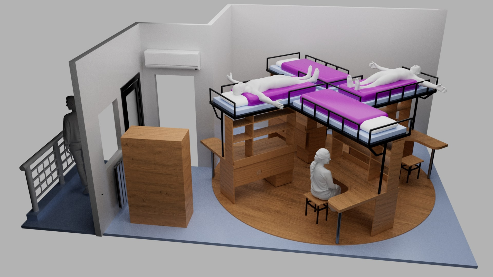
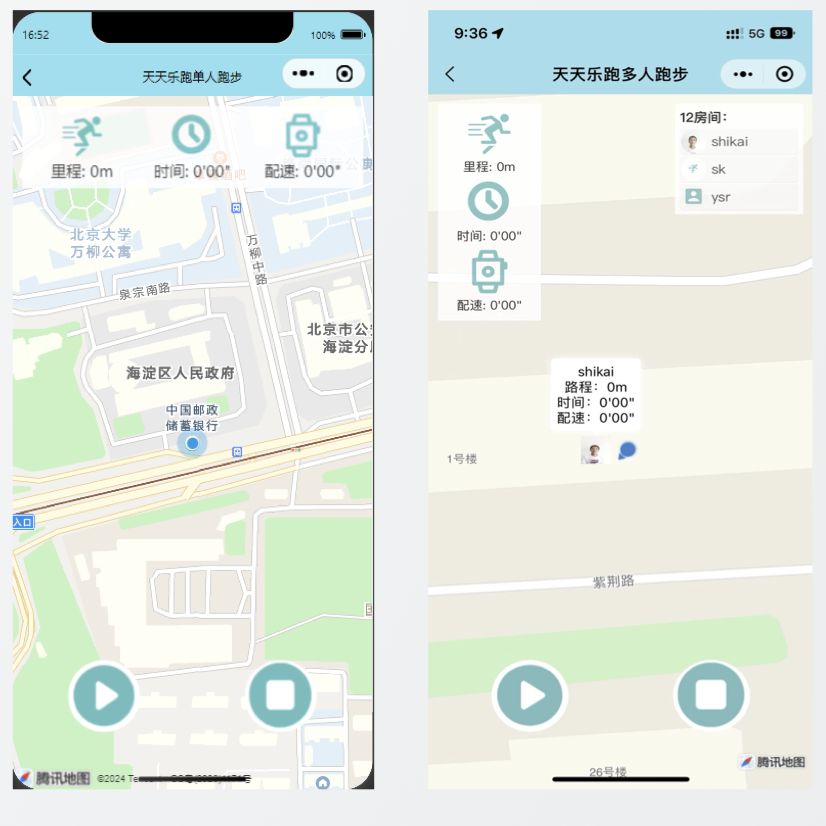
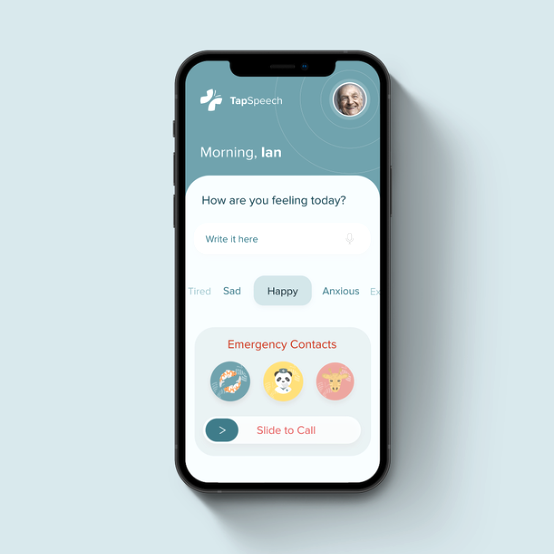

I’m a fourth-year undergraduate majoring in Software Engineering at Tsinghua University.
I currently work in the Intelligent Media and Cognition Laboratory (iMoonLab), advised by Prof. Gao Yue.
My research focuses on biomedical AI, multimodal learning, and hypergraph neural networks, with an emphasis on modeling MRI and clinical data for tumor prognosis.
My research interests lie at the intersection of machine learning, computer vision, and biomedical data science.
Currently, I am developing multimodal frameworks that integrate MRI and clinical text to address data scarcity in tumor prognosis.

HyperPriv-EPN: Hypergraph Privileged Information Distillation for Ependymoma Prognosis Under Review at Multimedia Conference, 2026, arXiv
Led a research initiative with Beijing Tiantan Hospital to address data scarcity in pediatric brain tumor prognosis.
We propose HyperPriv-EPN, a framework that fuses MRI and clinical text using a Learning Using Privileged Information (LUPI) paradigm.
Other Projects
These include coursework, internship work, and other cool stuff I worked on.
Real-time AI generated Livestreams
Kuaishou Technologies （快手科技） - Software Engineering Intern
Jun 2025 - Aug 2025
Engineered a production pipeline for real-time, speech-driven AI avatars.
Integrated fine-tuned Wav2Lip models with LLM-based response generation to create 24/7 interactive livestream advertisements.
Deployed on multi-GPU infrastructure for internal testing by the Kling AI group.

The "Windmill" Dorm Room (3D Design)
Tsinghua University 3D Design & Innovation Competition
Mar 2025 - Apr 2025
Designed a concept dorm room featuring a rotating "windmill" bunk-bed system to maximize space and (jokingly) "centrifugal blood flow for studying."
A project exploring the intersection of rigorous structural calculation and creative absurdity. Grand Prize Winner (votes from 400k+ views).

RunningMate（天天乐跑） - WeChat Mini-App
Tsinghua University - Software Engineering Class
Sep 2024 - Nov 2025
Team lead for a WeChat Mini-App facilitating real-time GPS route sharing and social tracking for marathon runners.
Handled the backend architecture and geolocation synchronization.
Won 2nd Prize at the National Software Innovation Contest (North China Division).

TapSpeech
Assistive Technology
Jan 2021 - Dec 2021
Co-founded a startup building an integrated app interface to help elderly and disabled patients communicate directly with caretakers.
Recognized as the Hong Kong City I&T Grand Challenge (Student Division) Champion and presented to the Chief Executive of Hong Kong.
{kind=link}